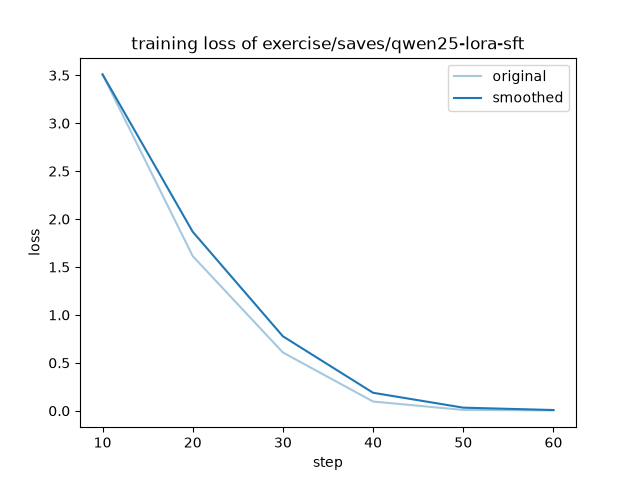

——大模型出厂时"什么都懂一点"，但不懂"你是谁、你的业务、你的口头禅"，怎么办？
可以把基座大模型想象成刚毕业的通用工科生：基础知识扎实，但对你们公司的业务一无所知。微调（Fine-tuning）就是给这位毕业生做入职培训——不重读大学，只拿公司的教材（你的数据）再练一遍，让他学会岗位技能。
技术上，微调就是拿一份"问答教材"，继续对模型做梯度训练：把教材里的问题喂进去，模型回答和标准答案的差（loss）反传回去，把权重往"答得对"的方向推一点。教材只有几十条也有效——对 1.5B 参数模型来说，记住一个新身份绰绰有余。
图 1：微调 = 基座模型 + 小教材，定向加技能
关联知识库：[[ChatModel与消息类型]]（模型就是可继续训练的权重文件）、[[LLM采样与温度]]（微调改"知识"，采样只改"口气"）
——提示词工程、RAG、微调，到底选哪个？
| 路线 | 怎么实现 | 适合什么 | 改动对象 |
|---|---|---|---|
| 提示词工程 | 提问时塞指令"请用 JSON 回答" | 临时格式要求、一次性任务 | 不改模型，每次对话都带 |
| RAG 检索增强 | 回答前先检索你的文档，塞进上下文 | 知识问答（公司制度、产品手册） | 不改模型，改喂给它的资料 |
| 微调 | 拿问答教材继续训练权重 | 身份人格、口吻风格、固定输出格式、领域习惯 | 永久写入权重，不用每次带 |
一句话分诊："查资料才能答的"用 RAG，"每次都想要的风格/身份"用微调，"偶尔要一次"用提示词。三条路经常混用：微调管性格和格式，RAG 管事实和知识。
图 2：三条路对照——改提示词、改资料、还是改权重
关联知识库：[[RAG检索增强生成]]、[[提示词模板]]（另两条路的已有笔记）
——抖音视频标题里的"配环境三天"是夸张吗？
不夸张。本地跑微调要凑齐四件套：Python 版本 + CUDA 驱动 + PyTorch 的 cu 版本 + 各依赖的版本。任何一个对不上，就是经典的 CUDA driver version is insufficient 或 DLL load failed。视频里"装 PyTorch 装三天"说的就是这一步。
视频给的答案是云端 Notebook：浏览器里开一个 Jupyter（Colab / 阿里云 DSW / ModelScope Studio），环境是镜像预装好的，零安装，还白送 GPU。你在网页里点几下、跑几个单元格，微调就开始了——这就是"浏览器点几下就能微调大模型"的真相。
图 3：本地配环境 vs 云端浏览器方案
本指南的反差点：本次实验反其道而行——在你自己的 RTX 4070 上真实跑通，证明环境配好之后，微调本身只需要"一个 YAML + 二十条数据 + 几分钟"。两条路线在文末第 14 问并排列出。
——100+ 模型的微调，凭什么统一成一个配置文件？
LLaMA-Factory（GitHub 70k+ star）是一个统一微调框架：它把"加载模型 → 套对话模板 → 读数据集 → 挂 LoRA → 训练循环 → 存 adapter"这条流水线全部封装好，支持 100 多种开源模型（Qwen、Llama、GLM、Yi、DeepSeek……）。
你要做的只剩两件事：写一个 YAML 告诉它"训谁、用什么数据、训几轮"，然后敲一行命令。不同模型的差异（模板格式、特殊 token、分词器）全由框架里的模型卡片消化。
图 4：YAML 进、adapter 出
——全参微调要动几十亿个权重，LoRA 说"只加两张小矩阵就够了"，凭什么？
研究发现：模型在微调时的权重变化 ΔW 是低秩的——虽然 ΔW 理论上有几十亿个自由度，但实际有效的变化只集中在很少几个"方向"上。于是 LoRA 不直接改 W，而是在旁边加一对小矩阵：W' = W + B×A，其中 A 是 r×d、B 是 d×r，秩 r 通常只有 8~64。
类比：W 是一台精密仪器的主机（不敢乱动），LoRA 是给它外接几个旋钮——学会新技能只需要调旋钮，不用重造主机。好处有二：训练显存暴降（优化器状态只存在于小矩阵上）和一个基座配多个旋钮（身份旋钮、客服旋钮、代码旋钮各存一个小文件，随时切换）。
图 5：全参微调 vs LoRA——改整机 vs 加旋钮
——LoRA 还要把基座权重整个放进显存，QLoRA 连这一步都砍了？
QLoRA = Quantized LoRA：基座权重不是以 bf16（16bit）而是以 4bit装进显存，训练时遇到需要精算的地方再临时反量化。4bit 是 [[量化与GGUF]] 笔记里同一个思想（有损压缩权重）用在训练场景：GGUF 量化是为了"推理装得下"，QLoRA 量化是为了"训练装得下"。
数学上靠三个部件撑住精度：NF4 数据类型（为服从正态分布的权重专门设计的 4bit 编码）、双重量化（连量化常数本身再量化一次）、分页优化器（显存峰值时把优化器状态临时挪到内存，防 OOM）。效果是论文级的：48GB 单卡微调 65B 模型。
本实验的 1.5B 模型 bf16 只有 3GB，QLoRA 用不上——这正是显存账单（下一问）要算清楚的：省显存方案按需取用，不是仪式。
——沿用知识库"显存账单"思维（[[KV缓存与上下文]]），把训练时的每一笔显存开销列出来。
训练时显存大头有三笔：权重 + 梯度 + 优化器状态。全参微调三笔全付，还要 bf16 存权重、fp32 存优化器状态；LoRA 只给 A/B 小矩阵付后两笔；QLoRA 再把第一笔打到 1/4。
| 方式 | 权重 | 梯度+优化器 | 7B 模型总显存 | 消费级显卡（12GB） |
|---|---|---|---|---|
| 全参微调 | 2 B/参数 | 10 B/参数（Adam） | ≈ 84~112 GB | ✗ 不可能 |
| LoRA | 2 B/参数 | ≈ 0（只在千分之一参数上） | ≈ 14~16 GB | ✗ 12GB 紧张 |
| QLoRA | 0.5 B/参数 | ≈ 0 | ≈ 4~6 GB | ✓ 轻松 |
图 6：三种微调显存开销对比（红色=权重，橙=梯度，黄=优化器状态）
本次实验模型只有 1.5B：LoRA + bf16 总占用约 4GB，4070 的 12GB 绰绰有余——账单算完再选方案。
——监督微调（Supervised Fine-Tuning）和预训练有什么区别？
预训练是"填空课"（几十 TB 网页，预测下一个词），SFT 是"示范课"：给模型看标准问答对，让它模仿。RLHF/DPO 那种"奖励打分"是更后面的进阶课，入门只需 SFT。
选"你是谁"当第一课因为它是最小可验证实验：数据集只需十几条、效果肉眼可见（改口换身份）、不依赖外部知识。训练前问"你是谁"答"通义千问"，训练后答出你编的身份——一行回答的差异就是微调生效的铁证。这正符合知识库的 [[证据优先质检ProofOverClaims]]：不看 loss 曲线吹牛，看模型实答对比。
——instruction / input / output 三个字段怎么填？
Alpaca 格式（斯坦福开源的指令数据格式）每条样本就三个字段：
有背景材料的问答就把材料放 input（"根据这段话总结："），纯问答就留空。本实验的 20 条数据见 exercise/data/shiyi_identity.json——每条都是"你是谁"家族的问题，答案全部指向同一个新身份"小拾"，互相印证、防止模型记岔。
——learning_rate、epochs、batch_size……每个旋钮拧大了会怎样？
| 旋钮 | 管什么 | 拧太大 | 本实验取值 |
|---|---|---|---|
| learning_rate | 每步学习的步子大小 | 忘光基座本领（灾难性遗忘） | 3.0e-4（实测：1e-4 训不动） |
| num_train_epochs | 教材整体过几遍 | 死记硬背、答非所问 | 12（20 条 × 12 遍 ÷ 4 = 60 步；实测 2~3 遍学不会） |
| per_device_train_batch_size | 每步同时看几条 | 显存爆 | 4（1.5B 轻松） |
| cutoff_len | 单条样本最长 token 数 | 显存涨、慢 | 1024（自我介绍用不满） |
| warmup_steps | 前 N 步从小步子慢慢加 | —— | 3（实测 5 会吃掉 1/3 训练步数） |
| save_steps | 每 N 步存一次中间产物 | 磁盘占满 | 100（反正总共 10 步） |
经验之谈：小数据集 + 2~3 epochs + 小学习率是身份/风格微调的安全配方；loss 曲线从 2~3 降到 0.x 就是学会了。
——finetuning_type: lora 之后还有三个子旋钮。
lora_rank（r）：A、B 小矩阵的秩，即"给多少个旋钮"。r=8 到 64是常用区间；r 越大表达能力越强、文件越大，但超过 64 收益递减。本实验用框架默认 8。
lora_alpha：放大倍数，和 rank 的比值决定补丁强度，默认 16（alpha/r = 2 是常见配比）。
lora_target：补丁贴在哪。all 表示所有线性层都贴（注意力 + 前馈网络），对 1.5B 小模型选 all 最省心；大模型为了省显存可以只贴 attention。
——loss 降了不算证据，模型嘴里说出来才算。
验证方法刻意做得"笨"而硬：固定同一批 5 个问题，训练前问一遍、训练后再问一遍，把回答原文并排贴出来。问题包括直球（"你是谁？"）、变体（"你叫什么名字？"）、干扰（"你是通义千问吗？"）、总结题（"用一句话总结你的来历"）。
判定标准：训练后模型在身份类问题上答出"小拾"并复述训练经过，且通用能力题（"你支持哪些语言？"）仍能正常回答——前者证明新技能写入，后者证明没把基座练坏（灾难性遗忘的体检项）。
——训练产物是什么？基座 3GB + adapter 4MB，出门带哪个？
LoRA 微调的直接产物是 adapter 文件夹（adapter_model.safetensors + adapter_config.json），只有几 MB~几十 MB——因为它只存 A、B 两个小矩阵。部署时 = 原基座 + adapter 叠加使用，所以提交代码库时 adapter 可以入库（本实验就是这么做的），基座不能（走 ModelScope 重新下载）。
| 去向 | 做法 | 产物大小 |
|---|---|---|
| 继续训练 | 在 adapter 上续训，或换数据再训一个 adapter | 仍是个位数 MB |
| 合并导出 | llamafactory-cli export 把 adapter 焊回基座 | 一个完整模型（3GB） |
| 量化给 ollama | 导出 GGUF → 拷进 ollama 模型库 | Q4 约 1GB（[[量化与GGUF]]） |
| HF/ModelScope 分享 | 把 adapter 当独立仓库上传，别人 base+adapter 即用 | 个位数 MB |
关联知识库：[[ollama]]（推理部署）、[[内容寻址与镜像分层]]（模型库的组织方式）
——"浏览器点几下"具体是在哪个网站点的？
| 平台 | 送什么 | 额度 | 特点 |
|---|---|---|---|
| Google Colab | T4 GPU 16GB | 免费档每天算力配额 | LLaMA-Factory 官方一键笔记本，海外访问门槛 |
| 阿里云 PAI-DSW | GPU 试用实例 | 新用户免费时长 | 国内直连快，视频教程的主平台 |
| ModelScope Studio | 在线 Notebook + 国内模型库 | 每日免费额度 | 下模型不用梯子（本实验也用了它的模型源） |
| LLaMA-Board (WebUI) | 网页图形界面 | 本地/云都能跑 | 真正"全程鼠标点几下"，一个 YAML 都不用写 |
共同结构：云端 Notebook 出算力 + LLaMA-Factory 出流水线 + LoRA 出省显存，三件套缺一不可。视频里"配环境三天"的潜台词是"别在本地配了"，而不是"微调本身很难"。
——微调不是银弹，三种情况劝退。
① 知识问答类："我们产品保修多久"——答案在变、文档在更新，微调会把旧答案焊死，用 [[RAG检索增强生成]]。
② 数据太少且太泛：三五条"说话客气点"不值得训练，系统提示词就能办。
③ 算力/维护预算为零：微调后要维护"基座版本 × adapter 版本"的配对关系，升级基座要重训——没有持续维护意愿就用提示词模板。
决策口诀：事实会变 → RAG；风格不变 → 微调；偶尔为之 → 提示词。
——全部命令真实执行过，输出为真机记录；环境：Windows 11 + Python 3.12 venv + torch 2.14.1+cu126 + llamafactory 0.9.5

图 7：真实 loss 曲线（training_loss.png，第 3 次训练）——前 20 步缓降、40 步后断崖，是典型的"小数据死记硬背"曲线